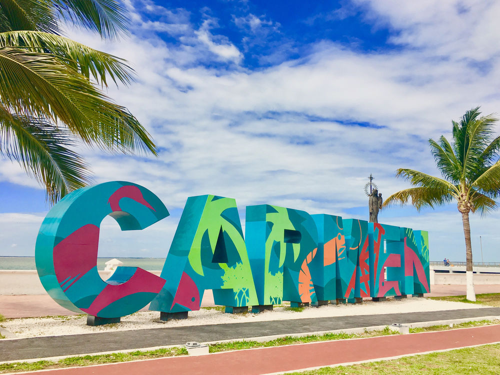
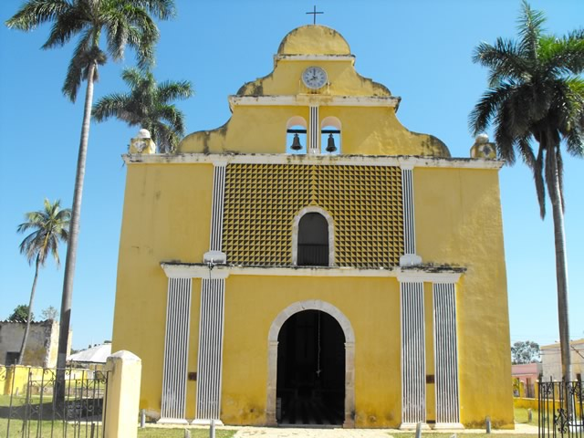
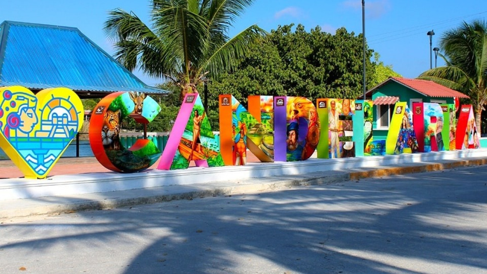

El
municipio de Campeche, cuya cabecera es la ciudad de San Francisco de
Campeche, destaca por su rica historia y patrimonio cultural. La
ciudad es conocida por su arquitectura colonial, con murallas y
baluartes que datan de la época virreinal, y ha sido declarada
Patrimonio de la Humanidad por la UNESCO.
La gastronomía local es variada, con platillos como el pan de cazón, el pámpano en escabeche y los camarones al coco . En cuanto a flora y fauna, la región cuenta con manglares y especies como el manatí en la Laguna de Términos . Las artesanías incluyen objetos ornamentales elaborados con asta de toro.
Ubicado en la isla del mismo nombre, el municipio de Carmen, con cabecera en Ciudad del Carmen, es un importante centro petrolero y pesquero. La Laguna de Términos, una de las áreas de protección de flora y fauna más grandes de México, alberga manglares y especies como el manatí y diversas aves acuáticas . Las artesanías locales incluyen objetos elaborados con conchas marinas y escamas de pescado .

Este municipio costero es conocido por su historia prehispánica y colonial. La economía se basa en la agricultura y la pesca. La flora incluye selvas secas y manglares, mientras que la fauna comprende especies como el venado y diversas aves. Las artesanías locales también utilizan materiales marinos.
Situado en el norte del estado, Calkiní es un bastión de la cultura maya. La comunidad de Bécal es famosa por la elaboración de sombreros de jipi-japa, una fibra vegetal . La región forma parte de los Petenes, un ecosistema único de manglares y selvas.
Este municipio agrícola conserva tradiciones mayas, como la celebración del Día de Muertos en Pomuch, donde se realiza la limpieza de huesos de los difuntos . La flora incluye selvas secas y humedales, y la fauna comprende especies como el jaguar y el ocelote.
Con vastas áreas agrícolas, Hopelchén alberga sitios arqueológicos mayas y comunidades menonitas. La flora predominante es la selva baja caducifolia, y la fauna incluye especies como el venado cola blanca. Las artesanías locales se centran en textiles y bordados.
Este pintoresco pueblo a orillas del río Palizada destaca por su arquitectura con techos de teja francesa. La región es rica en biodiversidad, con manglares y especies como el manatí . Las artesanías incluyen trabajos en madera y fibras naturales.
Pequeño municipio con economía basada en la agricultura y la ganadería. Conserva tradiciones y festividades de origen maya, como la celebración de la Virgen de la Asunción . La flora incluye selvas secas, y la fauna comprende diversas especies de aves y reptiles.

Importante nodo de comunicaciones por su ubicación estratégica en la red ferroviaria y carretera. Es un centro de servicios para la región sur del estado. La flora predominante es la selva alta perennifolia, y la fauna incluye especies como el jaguar y el tapir.
Hogar de la Reserva de la Biosfera de Calakmul, una de las más grandes de México. Cuenta con extensas zonas arqueológicas y biodiversidad, siendo clave para el ecoturismo y la conservación . La flora incluye selvas altas y medianas, y la fauna comprende especies como el jaguar, el puma y el mono aullador.
Municipio fronterizo con Guatemala, atravesado por el río Candelaria. Su economía se basa en la agricultura, ganadería y comercio transfronterizo. La flora incluye selvas húmedas, y la fauna comprende especies como el manatí y diversas aves acuáticas.

Recientemente elevado a municipio, cuenta con un puerto industrial en desarrollo. Se proyecta como un futuro polo de crecimiento económico en la región. La flora incluye manglares y selvas secas, y la fauna comprende especies marinas y aves costeras.
También de reciente creación, es conocido por su riqueza cultural y tradiciones mayas. La artesanía y la agricultura son pilares de su economía. La flora incluye selvas secas, y la fauna comprende diversas especies de aves y reptiles.